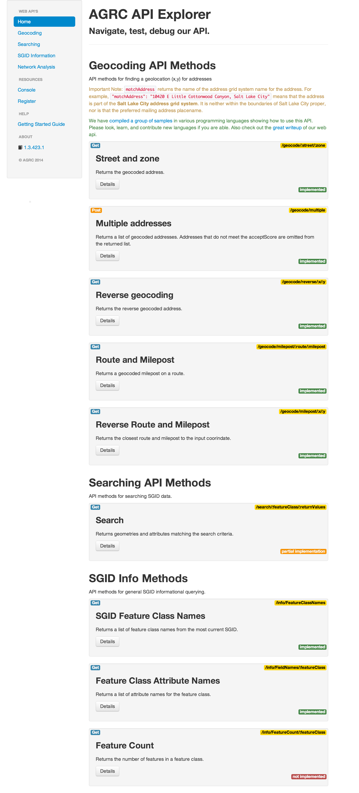
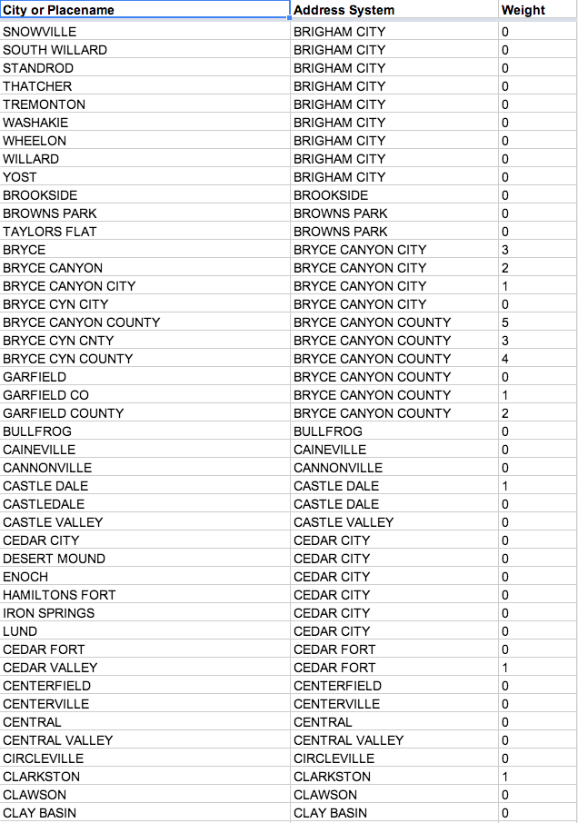
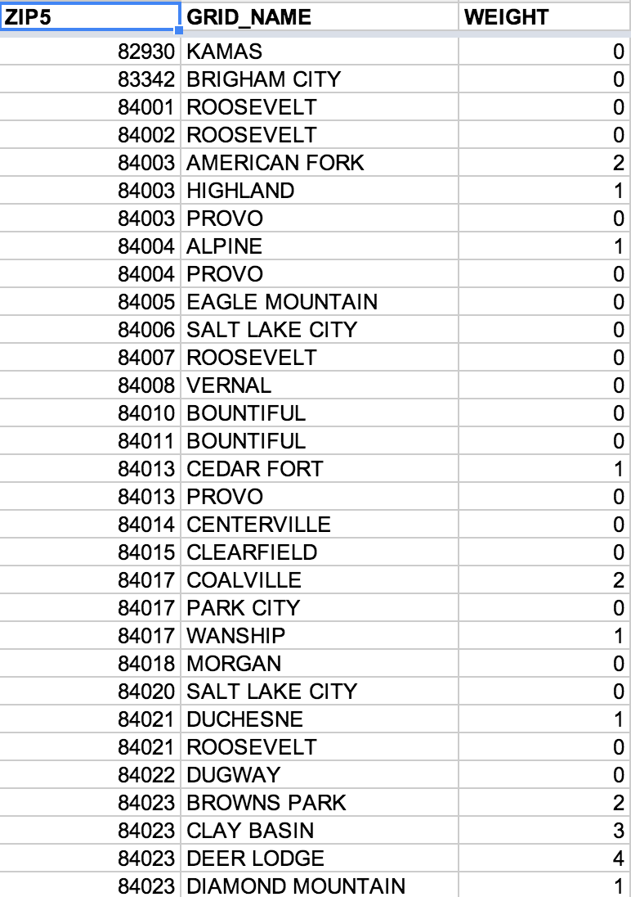
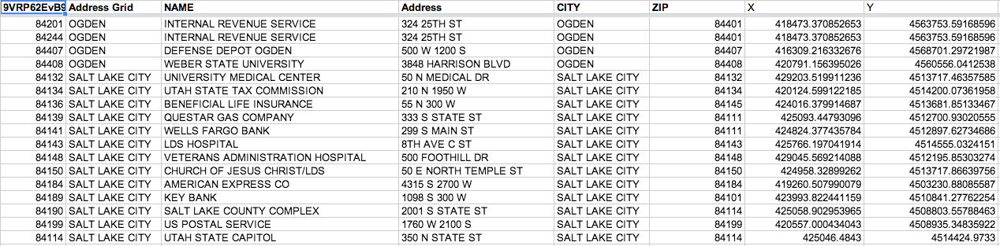
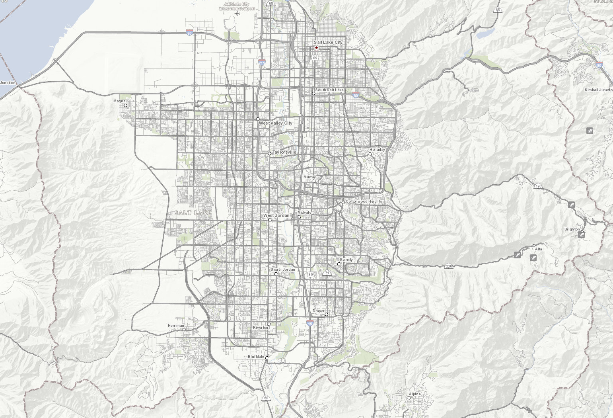
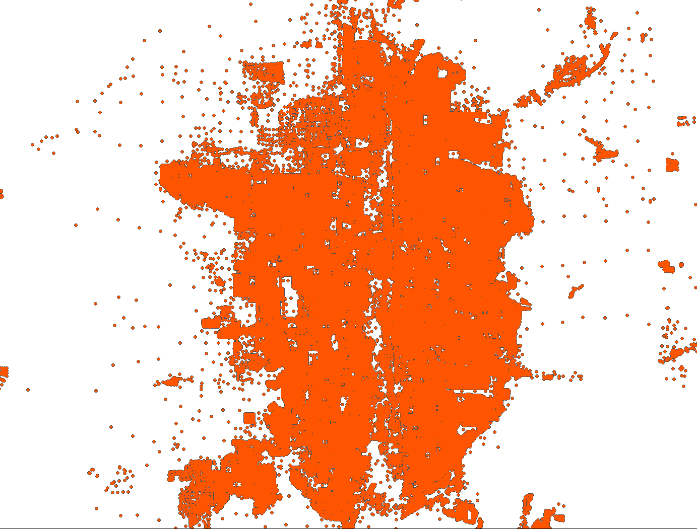
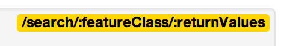
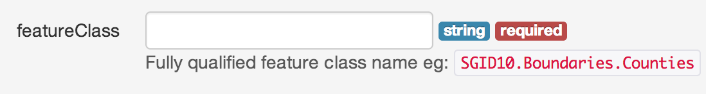
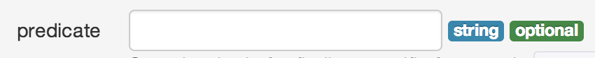

Unlock your API key Making AGRC data available through http
Steve Gourley
 @
@steveAGRC
Web Api's
api.mapserv.utah.gov
api.mapserv.utah.gov
Why?
Because programmers are lazy
That's a good thing
Geocoding
Is awesome.
Why?
The price is right
free
discrete > searchy
Address Grids!
Someone thinks
11398 South South River Heights Drive
is in
Sandy?
It is not.
It's in South Jordan.
It doesn't matter.
Sandy and South Jordan are both in the Salt Lake City address grid.
It works the same way with zip codes
and place names
and delivery points
It's kind of like a composite locator
We lean on 5 locators
4 locators use the streets data
Why do we need 4 locators?
Street Name
50 N Mario Capecchi Dr
Alternate Alias
50 N Highway 282
Address Coordinate System
50 N 1830 E
Address Points
We have over a million of these.
All of our data is locally sourced
Strong in rural areas
You can pick which ones to use
800+ test addresses
Address Reversals
700 South 231 East
Address Truncations
300s 200e and 300 s 200 e are not equal
Spatial Reference
Formats
esri js developer?
We return the json to make an esri/graphic
We can give you geoJson also
Suggestions
Score
Reverse Geocoding
Route and Milepost
Reverse Route and Milepost
Any quick questions so far?
I have stickers if you ask a question!
The SGID has over 500 datasets
Search any feature class
Get back geometries and attributes
Search with a predicate
or with a geometry
What feature class do I want
ArcCatalog and the
gis portal list the
SGID features
coders use the api
/info/FeatureClassNames
What attributes are important?
coders use the api
/info/FieldNames/:featureClass
shape@ and shape@envelope
geocoding an address is cool...
then use the search api to figure out ...
if you're in black bear habitat
or wildfire perimiters
You get the point.
Chain requests to gather useful information
Questions about searching?
http verb get and post
URI format  :required
optional params are appended to the query string. 
blah/blah? optional=syntax &more=thanone
This means you can't send certain URI reserved characters without encoding
How can I get started?
Register. It's free
Decide what kind of application
Generate an api key
For server/desktop use
Things that run on your computer or server
python, c#, php, ruby, ...
Use the ip address
Do not use internal ip's or things that start with 192.
If you screw this up, we will help you
Browser Applications
Are a little more tricky
They use regular expressions
We do this because your api key is out in the open on the internet
http://mapserv.utah.gov/plss
mapserv.utah.gov/plss
mapserv.utah.gov/plss/
mapserv.utah.gov/plss/*
http://atlas.utah.gov can have www.
*.atlas.utah.gov
*.atlas.utah.gov/
*.atlas.utah.gov/*
Samples
C#
JavaScript
Python
Ruby
PHP
Please send a pull request with your favorite language
General Stuff
No limits or throttling
Yet
Be nice and we won't have to
Do large jobs during off hours
Thanks
Questions, Comments, Discussions?
steve gourley
@steveAGRC
gis.utah.gov
api.mapserv.utah.gov
developer.mapserv.utah.gov
github.com/steveoh
github.com/agrc